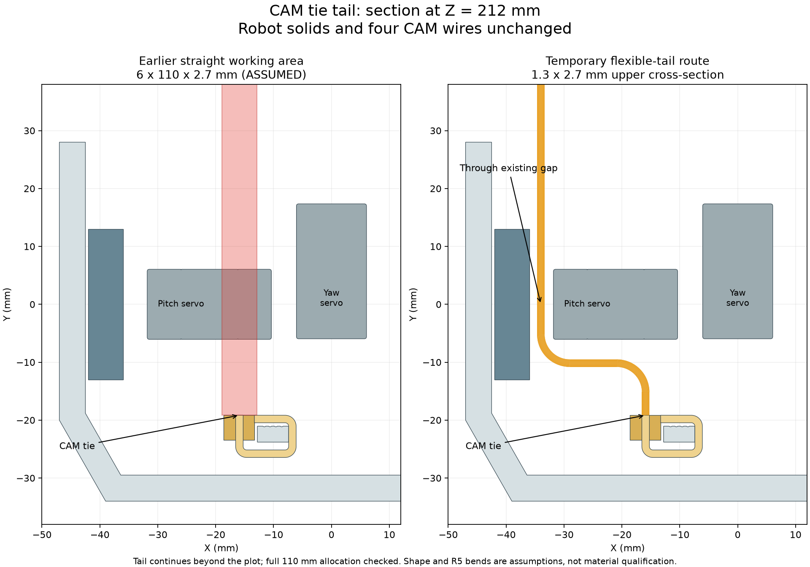
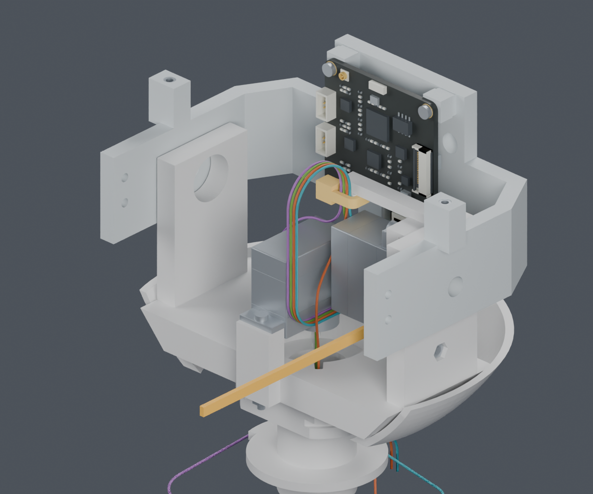
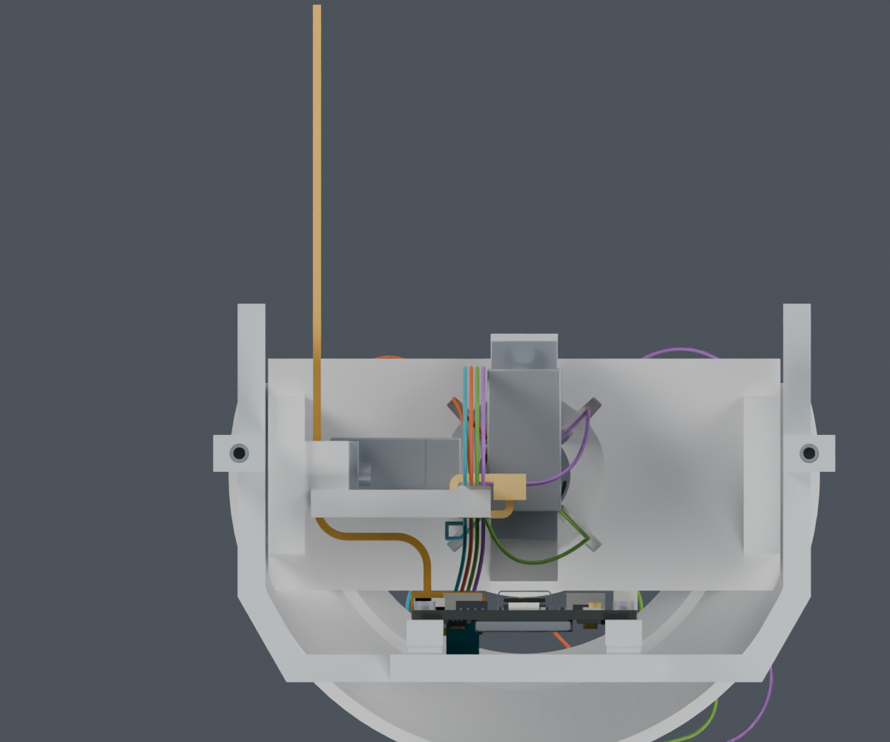

局部尾端形态检查PASS；完整穿带、收紧和整段带线装配仍未闭合。主模型M1.47、STL、正式动画和硬件均未修改。
供应商按图制作已经确定。JST完整端子压接参考、SH目录、PH目录已经找到；线长、分支、固定位置和整机安装顺序仍由项目完成。
旧检查把尾端固定为6mm宽、110mm长的直线操作区，因此穿过小舵机。改用官方尺寸图中带宽/厚度上界2.7×1.3mm的带段，沿小舵机和座壁之间的现有间隙绕行，局部可以通过。

橙色是最后会剪掉的扎带尾端，不是新增打印横梁或保留凸起。110mm只是偏长的检查分配，实际成环后的自由长度更短；没有发布剪切尺寸。
| 检查 | 结果 |
|---|---|
| 36个内部侧绕形态 | 均避开刚性件与四根CAM线 |
| 选定R5例 | 刚性间距0.50mm；导线表面间距下界3.65mm |
| 截面加0.2mm，路线偏移±0.5mm的9组检查 | 均通过；刚性间距至少0.40mm，导线间距下界3.56mm |
| 保存的带段实体 | 单个闭合实体，回读检查通过 |
R5与绕行形态仍为设计假设，扩大检查不是供应商公差或材料弯曲认证。起点与自身扣头、成环带身的接触不计入刚性件间距。


还需把初次穿带、拉紧操作、真实刀口开合及松线暂存放进完整装配顺序。旧的固定两端再抬升头托42mm路径仍失败；本次局部通过不代替它。
其余头部导线、FPC、身体侧固定以及实际插合面针序仍待完成。最终下料长度未放行。三份官方扎带尺寸图已留存；T18R官方页允许手工或工具安装，但没有替本项目验证R5弯曲和拉紧力。
完整记录 · 独立Blender · 36组结果 · 实体回读与扩大检查 · 48个失败外侧路线 · 命令 · 交付记录